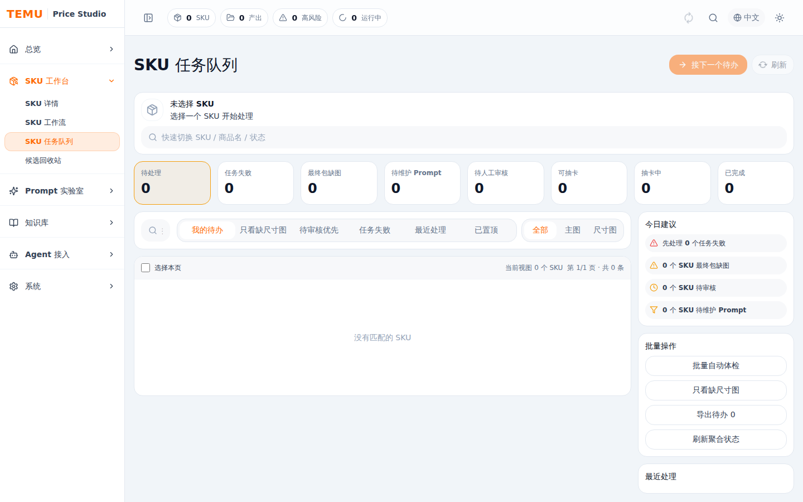
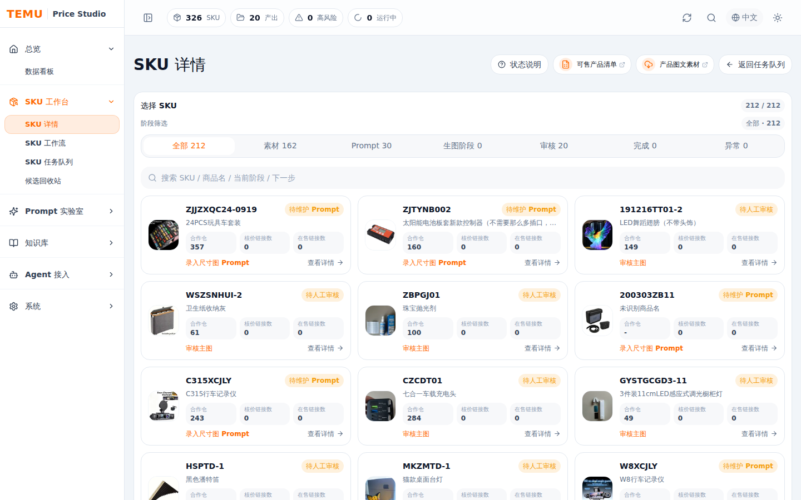

核价、生图和审核过程很容易失去上下文
Temu 商品图生产会牵涉 SKU 事实、仓库库存、价格、原始素材、线上参考、Prompt、生成批次、候选图、QA 和人工选择。只靠文件夹和临时脚本推进时，很难回答“这张图基于哪个 Prompt、哪组参考、哪个 job、为什么被采用”。
Temu 商品图生产会牵涉 SKU 事实、仓库库存、价格、原始素材、线上参考、Prompt、生成批次、候选图、QA 和人工选择。只靠文件夹和临时脚本推进时，很难回答“这张图基于哪个 Prompt、哪组参考、哪个 job、为什么被采用”。
项目覆盖 React + Vite + Zustand 前端，Express + TypeScript 后端，PostgreSQL、Redis、MinIO 专用基础设施，以及 Codex job、workflow skills、trace、文件索引、候选人审和数据迁移工具。系统整理信息，最终判断保留给人。



集中查看商品事实、素材、库存、仓库、价格、毛利、核价链接、候选图和历史记录。
围绕当前 SKU 维护下一步动作：选择参考图、Prompt 版本、抽卡任务、候选审核和最终包。
按待办、失败、缺图、待审核、可抽卡等状态筛选 SKU，帮助判断今天先处理哪个商品。
沉淀高级参考图、Prompt 管理、Prompt 竞技场和 SKU 实验，再把有效方法复制到生产 SKU。
每次生图记录 Prompt、参考图、job、trace、batch、候选图和 QA；采用与不采用由人工确认。
Jobs 页面承载任务创建、启动、暂停、继续、取消、日志、进度和失败归因。
连接 Prompt 模板、规则、Wiki 页面和 SKU 实验结果，避免经验只留在一次性对话里。
提供 data doctor、snapshot、restore 和 PostgreSQL 镜像对账，保证本地数据可检查、可迁移。
同步商品、仓库、价格、素材和线上参考，形成可筛选的 SKU read model。
人工维护 SKU 级 Prompt 和参考图选择，系统保留版本、备注和推荐状态。
Codex job 触发 workflow skills，生成候选图、manifest、trace、QA 和执行日志。
候选图经采用、不采用、恢复和清理后，最终包只统计人工确认的主图和尺寸图。
数据看板、SKU 详情、SKU 工作流、任务队列、Prompt 实验室、Jobs、知识库和设置组成统一操作台。
后端按 routes、services、domain、repositories 和 infrastructure 分层，统一提供 products、prompts、draw、jobs、files、metadata 和 infra health 接口。
/mnt/f/Share/dataset/temu_price_studio 保存 source materials、online materials、price photos、workspace、prompt runs、draw sessions、candidate decisions 和 jobs。
Codex queue 调用 workflow skills 执行生图、QA、trace 和文件落盘；前端再把产物映射回 SKU、round、Prompt 和人工决策。
http://192.168.31.114:33010/ 的局域网演示环境，公开图片已对 SKU 编码和商品名做脱敏处理。33010，API 端口 38090；PostgreSQL、Redis、MinIO 使用项目专用 Compose 栈。npm run dev 启动前后端，npm run dev:full 同时启动专用基础设施。npm run data:doctor、npm run data:snapshot 和 npm run data:sync-postgres 维护。继续加强 SKU、核价链接、候选图、Prompt 版本、素材证据和 job 之间的索引与筛选体验。
把 Prompt 竞技场和 SKU 实验里验证有效的方法，更顺滑地复制成 SKU 级 Prompt 草稿和推荐版本。
围绕 JSON/PostgreSQL 镜像、MinIO 资产、Redis 队列、snapshot/restore 和数据体检强化可恢复性。
继续完善 manifest、OpenAPI、tool spec、运行时策略和 API Catalog，让外部 Agent 更稳定地接入工作台能力。